Сегменты окружности
Инга / 06.04.2014, 22:48
Форум:
Как разбить окружность, например, на 12 или 16 равных (две линии и дуга) частей и каждую часть закрасить своим цветом (две линии от цента и дуга). Т.е через цент окружности проходят линии, которые разбивают окружность на 12 равных псевдо треугольников (две линии и дуга). Каждый такой треугольник можно закрасить в свой цвет. Как это сделать?
нарисовать один сектор - инструмент Ellips Tool (F7) - позволяет это сделать одним движением
(а именно так называется то, что вы хотите, т.к. сегмент - это только часть окружности, а вы ведете речь о частях круга)
с нужным углом и далее вызвав Трансформацию - Поворот - ALT+F8 сделайте несколько копий с поворотом
каждый сектор красьте как заблагорассудится
Кто может выложить урок чтобы можно было сделать такое, причем, чтобы было легко менять кол-во цветных секторов.
Легко не получится. Но быстро - вполне возможно :-/
Для этого потребуется:
1. Нарисовать правильную окружность.
2. Создать ее копию поверх исходного контура (клавиша «+» ) и покрасить в нужный цвет.
3. Преобразовать копию в сектор (в данном случае равный 10°)
4. Перенести его центр вращения к центру исходной окружности. Это можно сделать как перетаскиванием мышью, так и поставив соответствующий маркер в докере Трансформация.
5. Внимательно рассмотреть приложенную картинку:
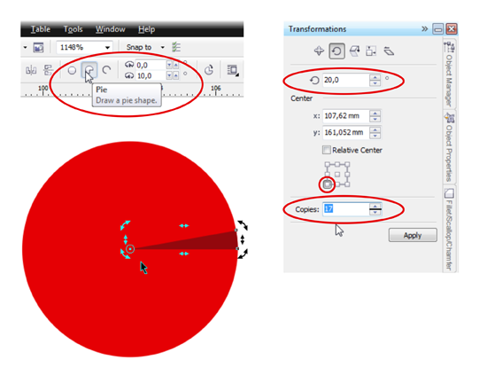
После нажатия на кнопку Apply (Применить) получится ровно то, что мы видим на картинке из предыдущего поста.
Метод имеет относительный недостаток: предварительно нужно сосчитать сколько потребуется секторов, вычислить их размер и на несколько секунд задуматься перед тем как указать в докере нужное количество копий и градус поворота. Если понадобится изменить количество лучей, придется рассчитать все по новой, заодно удалив копии сектора, созданные в предыдущем примере.
Для того чтобы полностью автоматизировать процесс, понадобится или параметрический объект типа Звезды, где количество лучей можно менять одним нажатием кнопки (в DRAW такого пока вроде нет) или макрос (который, возможно, уже кем-то написан).
Есть другой вариант, проще и быстрее и ничего считать не надо.
1. Рисуем окружность, далее выбираем инструмент Полигон (Polygon Tool), устанавливаем необходимое количество сторон (в данном случае - 12) и рисуем этот многоугольник-полигон, после этого рисуем ровную горизонтальную линию, большую чем диаметр окружности.
2. Выделяем все объекты и нажимаем английские C, E - то есть все центрируем относительно друг друга (рисунок 1)
3. Дважды с интервалом клацаем мышкой по линии, входим в режим поворота объекта
4. начинаем поворачивать линию вокруг оси пока не совместим её с ближайшей вершиной полигона, не отпуская нажатую левую клавишу нажимаем правую клавишу для создания копии (рисунок 2)
5. Несколько раз нажимаем Ctrl-R, повторяя копирование линии вокруг своей оси (рисунок 3)
6. Удаляем многоугольник
7. Выбираем инструмент интеллектуальная заливка (Smart Fill Tool) и тыкаем курсором внутри каждого получившегося сектора, заливая его цветом, при этом получается необходимое нам количество кривых одного цвета (рисунок 4)
8. Удаляем ненужную окружность и прямые линии, и раскрашиваем каждый сектор в нужный нам цвет
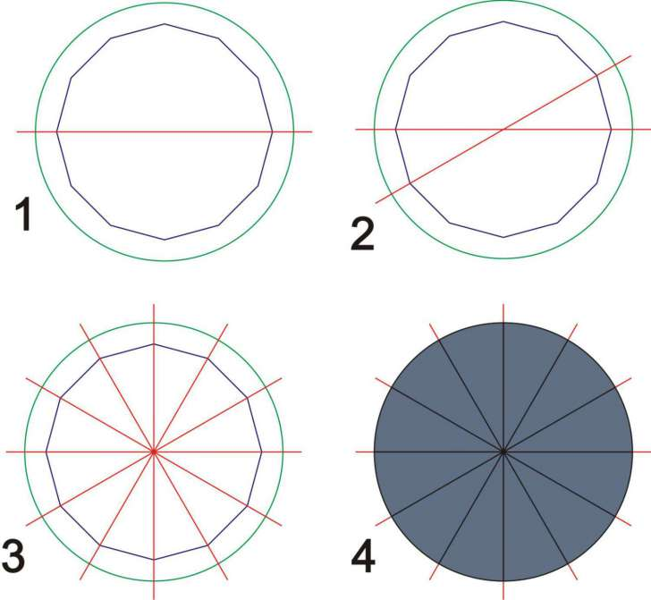
Sokolovich, shark ОГРОМНОЕ СПАСИБО!
Я предлагаю способ, без дополнительных технологических элементов, без использования инструмента Интеллектуальная заливка, и считать всё будет самa программа CorelDRAW.
Некоторый недостаток состоит лишь в том, что установленное в окошке "Starting and Ending Angle" значение 360 после создания круга сбрасывается на 0.
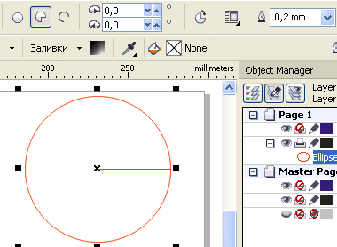
Поэтому придётся использовать полукруг
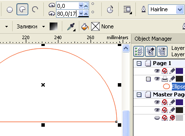
Предположим, что надо разбить круг на 17 секторов (специально выбрал нечётное число, чтобы усложнить задачу).
Прямо в окошке "Starting and Ending Angle" разделим значение 180 на 17
$img3$
Затем, полученное значение в окошке "Starting and Ending Angle" умножим на 2 (чтобы прийти к результату 360/17)
Затем Смещаем центр вращения в вершину сектора.
В окне Трансформации в окошко Угол вводим значение, полученное в окошке "Starting and Ending Angle"
21,176 и нажимаем кнопку получения дублей столько раз, сколько потребуется до заполнения секторами-дублями целого круга.
Вот и результат
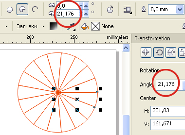
Solowejka, круто ))) Не знал, что в Corel в поля ввода вместо конкретных цифр можно вставлять формулы.
В виде бонуса предлагаю еще одну феньку :)
Если, выполнив п.4 в моем предыдущем примере, вместо нескольких копий сектора создать его клон (Edit>Clone), можно получить довольно интересный результат. Для того чтобы все сработало как надо, в полях Duplicate distance (Расстояние до копии) необходимо выставить значения 0,0 (у меня они всегда стоят по умолчанию):
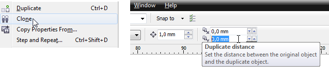
Создав клон, его нужно установить в правильную исходную позицию. В моем примере это выглядит так:
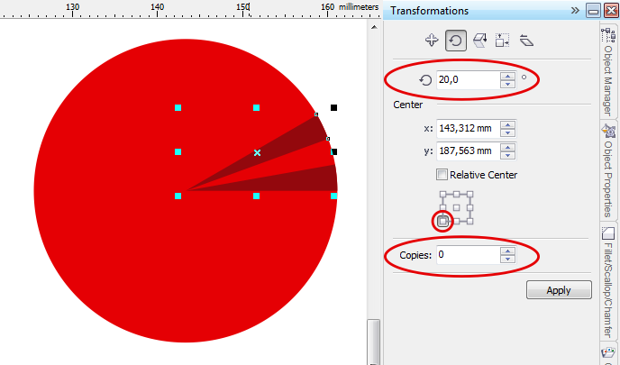
Далее нужно создать необходимое количество копий клона. Делается это тем же образом с помощью докера Трансформация (минус одна копия, место которой уже занято исходным мастер-объектом). Каждая копия клона по совместительству является клоном исходного сектора, наследуя его свойства.
В результате получаем интерактивную группу, пригодную для некоторого количества быстрых трансформаций. Это не совсем то, что хотела Инга, но тем не менее…
Например, если задать для исходного сектора (мастер-объекта) новую величину в градусах, это изменение сразу отразится на всех его клонах:
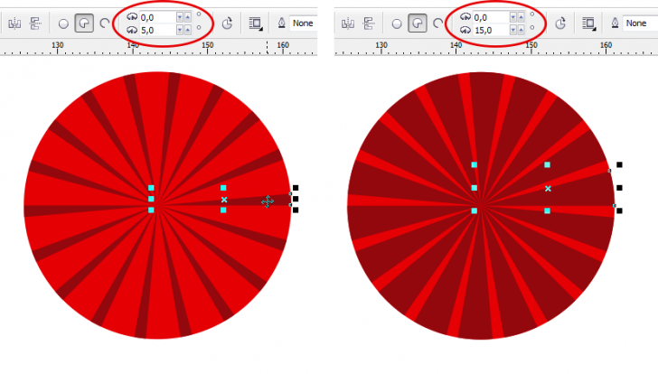
Также можно моментально перекрасить всю группу секторов, применив новую заливку к мастер-объекту. Причем эта заливка может быть не только сплошной, но и градиентной:
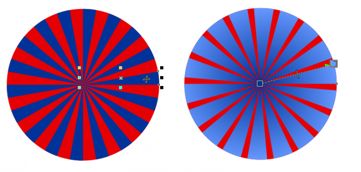
Важно отметить, что все изменения нужно применять именно к мастер-объекту. Если он потерялся среди клонов, достаточно кликнув на любом из объектов группы, вызвать контекстное меню и выбрать пункт Select Master. Если выделенный объект по счастливому стечению обстоятельств окажется исходным, строка контекстного меню примет вид Select Clones:
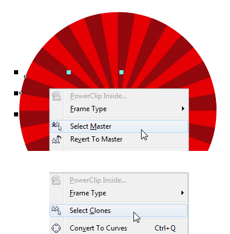
Свойства отдельного клона можно менять индивидуально (выбрав для трансформации сам клон, а не исходный объект). Эти изменения не отразятся ни на остальных клонах, ни на мастер-объекте. В случае, если отбившиеся от рук клоны нужно вернуть к общему виду, задаваемому исходным объектом, в контекстном меню выбирается соответствующий пункт:
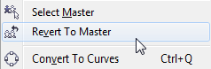
Спасибо за интересные варианты!